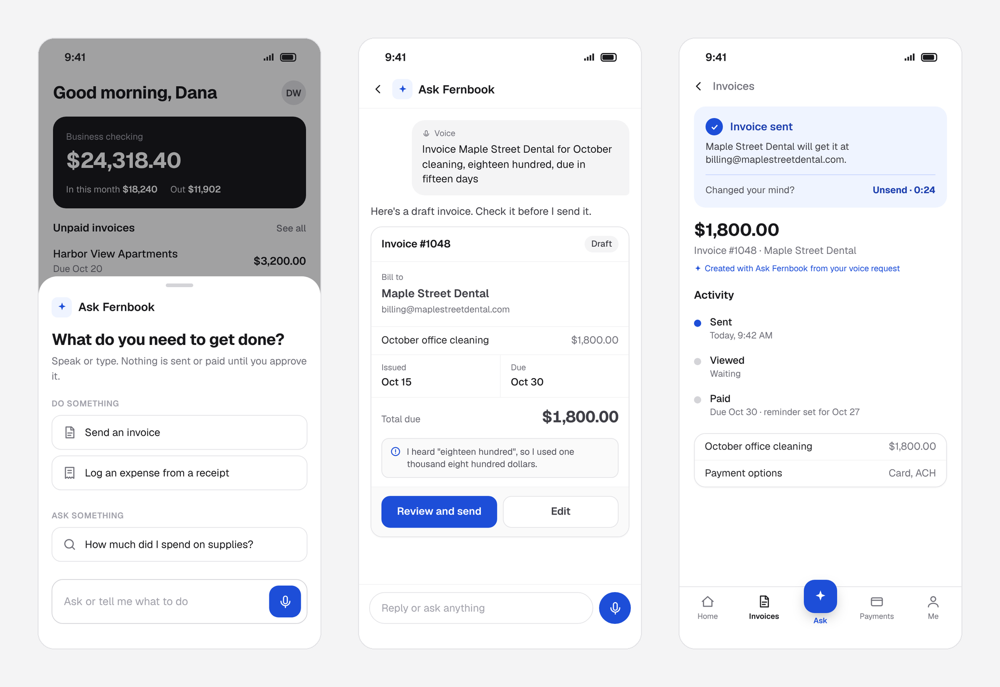
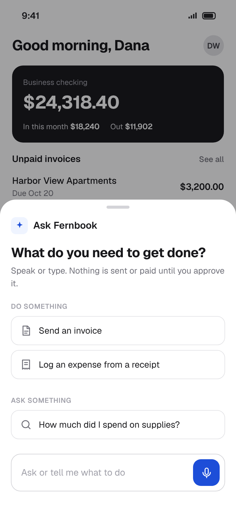
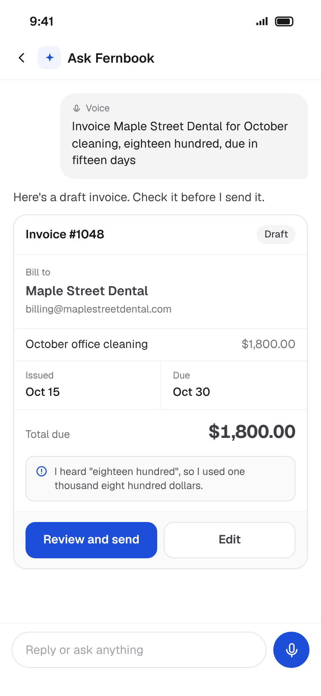
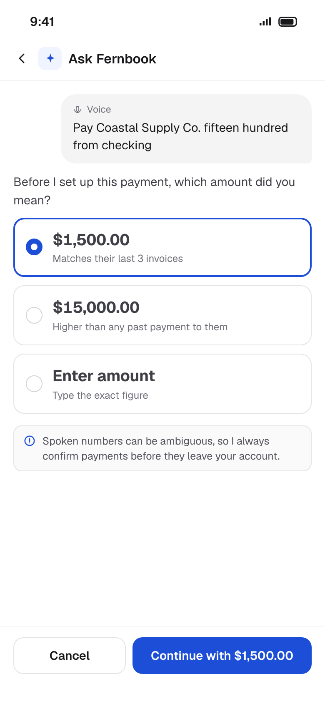
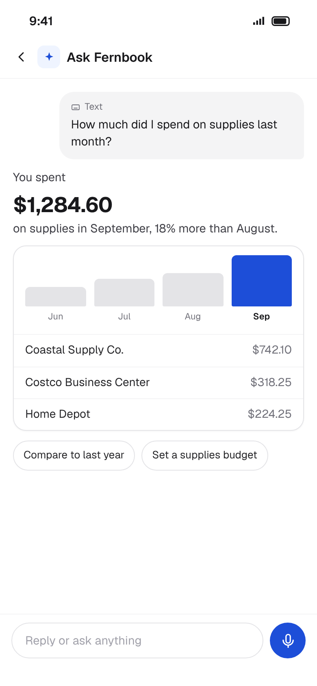
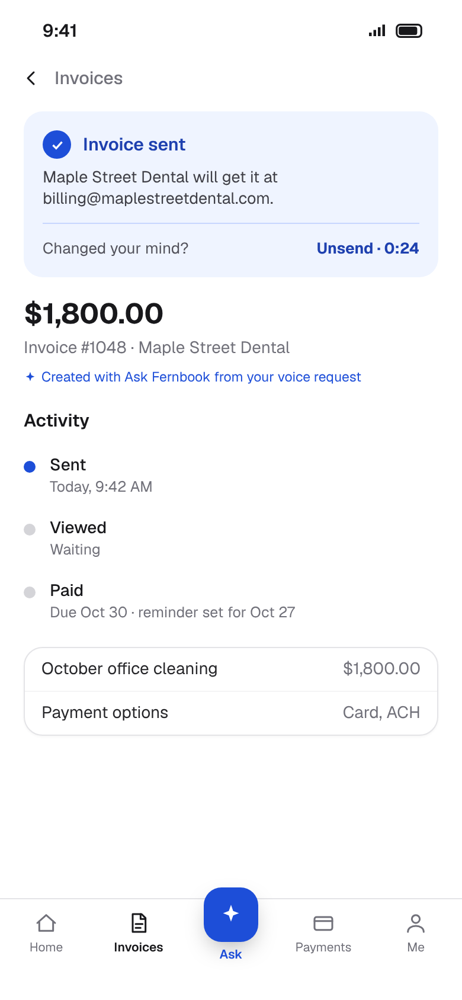
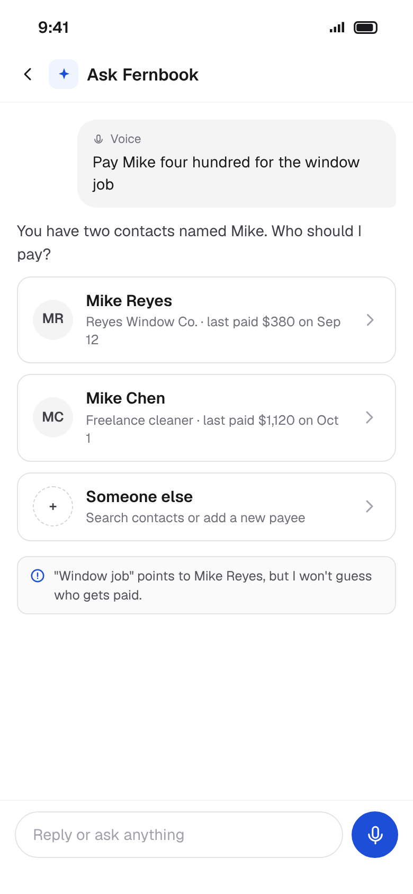
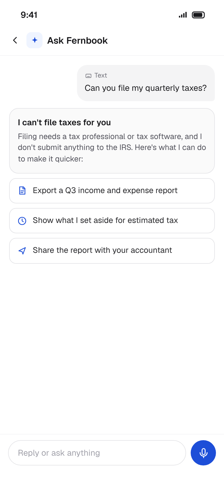
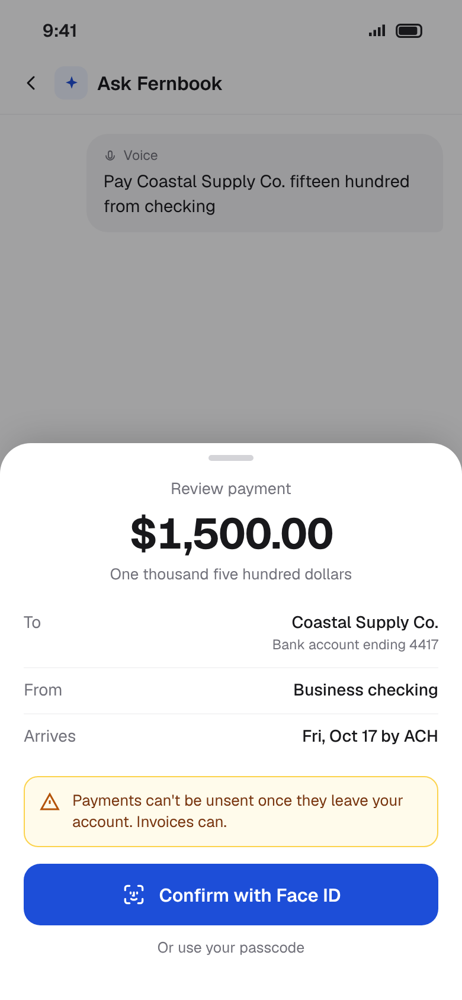

Ask Fernbook
A voice and text assistant for a small business finance app, so owners can send invoices, check spending and pay suppliers in one sentence.

Money and voice are a hard pair
Voice is the fastest way to say what you want, and the least precise. "Fifteen hundred" can be heard as fifteen thousand. "Pay Mike" can mean two different people. In most apps a misheard word costs a retry. In a finance app it can cost real money that doesn't come back.
That makes the interesting problem not speed, but trust: how an assistant can move as fast as a sentence while making every number, recipient and action easy to check before it counts.
Money admin happens in the gaps of the day
Dana runs a six-person cleaning company. She does her books between jobs: in the van, in a parking lot, at a client's door. She knows exactly what she wants to do, but sending one invoice takes a full flow of screens built for a desk.
Three rules for an assistant that touches money
One sentence, one task
Turn common jobs like invoicing and expense logging into a single request.
Never move money on a guess
Anything that sends or pays waits for an explicit, informed tap.
Answers you can check
Every number comes with the transactions behind it.
One request, four stages
Doing and asking follow the same path, whether the request starts as voice or text.
Fast, but never a black box
Speed only matters if owners trust the result. Each decision trades a little automation for a lot of confidence.
Open with examples and a promise
A blank input makes people guess what the assistant can do. The sheet groups suggestions into doing and asking, and the first line promises that nothing is sent or paid without approval. The mic sits where the thumb already is.
Considered: a full-screen chat as the entry point. Rejected because it pulls owners away from the screen they were on, and most requests are one line, not a conversation.

Show what was heard, then read it back
A live transcript lets owners catch a misheard client name while they speak. On the draft, Fernbook spells out how it read the spoken amount, so "eighteen hundred" is visibly $1,800.00 before anything is sent. The read-back is also an accessibility pattern: the amount is confirmed in words as well as digits, so it works for screen reader users and anyone who misreads figures.
Considered: asking "Did you mean $1,800?" after every spoken amount. Rejected because blocking every number makes the common case slow. The read-back informs without stopping the flow, and blocking is saved for real ambiguity.

Ambiguous amounts get a choice, not a guess
"Fifteen hundred" is easy to mishear as fifteen thousand. For payments, Fernbook asks which amount was meant and ranks the options against payment history, so the likely answer is one tap and the unusual one is flagged.
Considered: auto-paying trusted suppliers once the amount matched history. Rejected because one wrong payment costs more trust than ten saved taps.

Answers show their working, and actions can be undone
A spending answer leads with the number, then shows the trend and the transactions behind it. After an invoice is sent, a short unsend window and a note that it was created with Ask Fernbook keep every action traceable and reversible.
Considered: answering with a single sentence and no breakdown. Rejected because an unexplained number is one owners would check again in their bank app anyway, which defeats the point.


Designing the failures, not just the happy path
An AI assistant is judged on what it does when it isn't sure. These three cases shaped the rules more than any happy path did.
"Pay Mike" with two Mikes
When a request matches more than one contact, Fernbook shows each one with enough context to choose: company, last amount, last date. It can say which looks likely, but it never picks who gets paid. A misheard name that matches nobody gets the same treatment, with search and add a new payee one tap away.

Saying "I can't" without a dead end
Asked to file taxes, Fernbook says plainly that it can't and why, then offers the closest things it can do. A clear boundary builds more trust than a vague attempt.

Payments get a heavier confirm
An invoice can be unsent. A payment can't. So payments get a full review: the amount in digits and words, the bank account, the arrival date, a plain warning, and Face ID or a passcode. Voice can start a payment, but it can never finish one.

Built for eyes on the job, not on the screen
Owners use Fernbook in a van or at a client's door, often while talking, not looking. Touch haptics tell them what happened without a glance, and the pattern gets stronger as the stakes rise.
What Fernbook hears, keeps and can touch
Requests are saved as text the owner can review or delete.
It reads accounts to draft, but can't add payees or change bank details.
A "What Fernbook can see" page lists its access, and every answer shows its source.
Speed, with a line that can't be crossed
A concept, so these are launch targets, not results. All names, businesses and figures on this page are fictional.
Designing for trust, not just speed
The fastest flow isn't the one with the fewest taps. It's the one where people never have to double-check the result somewhere else. Money raises that bar.
What this explored
- Carrying draft-before-save into a domain where mistakes cost money.
- Confirming spoken numbers and names without slowing down the common case.
- Making AI answers and limits checkable, not just plausible.
What I'd test next
- Usability sessions with five small business owners, on the move.
- Voice accuracy with accents, background noise and fast speech.
- A full voice-only and screen reader run-through, start to finish.
Keep exploring